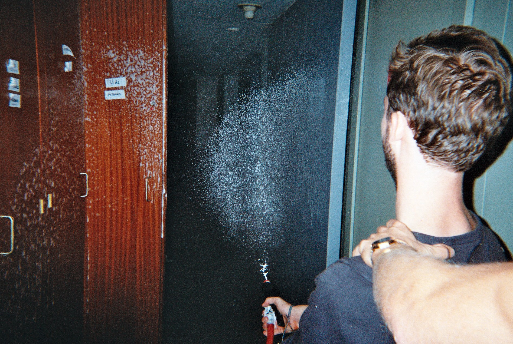

<!DOCTYPE html>
<html lang="en">
<head>
    <meta charset="UTF-8">
    <meta name="viewport" content="width=device-width, initial-scale=1.0">
    <title>Progressive Enhecement </title>
    <link rel="stylesheet" href="style.css" >
</head>
<body>
    


    <header>

        <h1 >Est-ce un <strong class="mal">Mal</strong>? Est-ce un <strong class="mal">Mal</strong>? Je ne sais pas.</h1>

        <blockquote id="blockquote">11 mai 2016, <a href=https://en.wikipedia.org/wiki/Glorious_(music_group) alt="glorius dans sa splendeur"> Alexandre Gorius</a>
            <p class="para"> Dans la nature, <strongclass="bien">Bien</strong> & <strong class="mal">Mal</strong> n’existent pas. L'Univers lui-même n'est ni bon ni mauvais, mais un potentiel en développement permanent.</p>
            
            </blockquote>
        
        <h2 class="h2">Dans la vie, il y a 4 types de personnes.</h2>
        
        <ul class="ul">
            <li id="pouce">les gens qui pensent qu'Internet c'est <strong class="bien">Bien</strong>,</li>
            <li id="poucebas">les gens qui pensent qu'Internet c'est le <strong class="mal">Mal</strong>,</li>
            <li id="chat">les gens qui pensent qu'Internet ce sont des chats,</li>
            <li>les gens qui n'y pensent pas.</li>
        
        </ul>
        
        </hr>
    </header>
   

 

<p class="para2
">Du point de vue de ce rocher sur Mars, rien ne se soucie de vos problèmes. Là haut, ça n’a pas d’importance, il n'y a aucun "problème", tout est comme cela doit être.</p>

<p class="para3">Ici bas, la seule réalité qui soit est celle de notre conscience. Rien n’existe si la conscience ne le pense pas. Rien n’existe non plus si nos sens ne transmettent pas le message. Cela signifie que si nous sentons <strong class="mal">Mal</strong> quelque chose, notre réalité change. C’est chose possible car notre perception est limitée: on ne peut pas voir à 360 degrés par exemple. Si nous pensons nos sensations d’une manière ou d’une autre, alors notre réalité change aussi en fonction de la manière. Ainsi, si nous pouvons autant changer notre réalité, alors rien n’est tangible.
</p>
<p class="para4">Il y a des preuves à cela. Tombez amoureux de quelqu’un et vous aurez une vision quasi divine de cette personne. Sortez de son emprise, cette personne se révèle différente. Pourtant elle n’a pas changé, seulement vous avez changé d’état d’esprit. Tout fonctionne de cette manière : ce n’est pas seulement que vous pouvez activement façonner votre monde de cette manière, c’est que vous le faites passivement, quoi qu’il arrive.
</p>


<p class="para5">Le rocher sur Mars ne fait pas la différence entre <strong class="bien">Bien</strong> et <strong class="mal">Mal</strong>, car pour lui, ni l’un ni l’autre n’existent.
    Tout est relatif à un point de vue. Ainsi, il n’existe pas de <strong class="bien">Bien</strong> ni de <strong class="mal">Mal</strong>, car <strong class="bien">Bien</strong> et <strong class="mal">Mal</strong> sont des valeurs absolues. Si quelque chose est bon d’après quelqu’un et <strong class="mal">Mal</strong> d’après quelqu’un d’autre, alors cette chose n’est en elle-même ni bonne, ni <strong class="mal">Mal</strong>. Rappelez-vous : d’après ce rocher sur Mars, il n’y a pas de séparation entre <strong class="bien">Bien</strong> et <strong class="mal">Mal</strong>, les deux n’existent jute pas.
    
	“Est-ce un <strong class="bien">Bien</strong>? Est-ce un <strong class="mal">Mal</strong>? Je ne sais pas.”

    Une histoire chinoise célèbre illustre parfaitement ce propos.</p>


<p class="para6">C’est l’histoire d’un fermier qui possède un cheval. Un jour, le cheval s’enfuit. Les villageois s’ameutent à la maison du fermier pour lui remonter le moral.

        "Quelle class="mal" Malchance ! Ton seul cheval ! Nous sommes vraiment désolé pour cette perte, c’est si triste !”        Le fermier répond, “Est-ce un <strong class="bien">Bien</strong>? Est-ce un <strong class="mal">Mal</strong>? Je ne sais pas.”
        Le jour suivant, le cheval revient avec sept magnifiques juments. Les villageois reviennent pour célébrer la bonne nouvelle

        “Quelle chance incroyable ! Avec huit chevaux, tu es un homme riche ! Tu dois être ravis de cette nouvelle ! Le fermier répond, “Est-ce un <strong class="bien">Bien</strong>? Est-ce un <strong class="mal">Mal</strong>? Je ne sais pas.”
        Le jour d’après, le fils du fermier s’occupe de l’entraînement des nouveaux chevaux. Mais l’un d’entre eux s’est révélé agressif; le garçon tombe et se casse la jambe. Les villageois reviennent.

        “Pauvre enfant ! Nous sommes si désolé pour ce qui est arrivé ! Nous espérons qu’il s’en remettra bientôt, c’est tellement dommage…    Le fermier répond, “Est-ce un <strong class="bien">Bien</strong>? Est-ce un <strong class="mal">Mal</strong>? Je ne sais pas.”
        Le quatrième jour, l’armée arrive au village à la recherche de nouvelles jeunes recrues. Grâce à sa jambe cassée, le fils du fermier échappe au recrutement        "Quelle nouvelle incroyable ! Ton fils échappera à cette guerre sanglante, il vivra, à tes côtés ! Tu dois être tellement heureux, c’est fantastique !
        Quand <strong class="bien">Bien</strong> même, le fermier répond, “Est-ce un <strong class="bien">Bien</strong>? Est-ce un <strong class="mal">Mal</strong>? Je ne sais pas.”</p>

<h3>En résumé, représentons ce dialogue sous forme de tableau</h3>

    <table style="border:2px  solid white" >

        
                <th style="border:2px  solid rgb(175, 175, 180)" background="grey"> Evénement</th>
                <th style="border:2px  solid rgb(240, 240, 245)"><strong class="bien">Bien</strong> ou <strong class="mal">Mal</strong> ?  </th>

                
        <tbody>
            <tr>
                <td style="border:2px  solid rgb(175, 175, 180)">Perdre son cheval</td>
                <td style="border:2px  solid rgb(248, 246, 246)">Cela depend</td>

            </tr>
            
        </tbody>
        <tbody>
            <tr>
                <td style="border:2px  solid rgb(175, 175, 180)">Gagner 7 chevaux</td>
                <td style="border:2px  solid rgb(247, 239, 239)">Cela depend</td>

            </tr>
            

        </tbody>
        <tbody>
            <tr>
                <td style="border:2px  solid  rgb(175, 175, 180)">Le fils se blesse</td>
                <td style="border:2px  solid rgb(236, 233, 233)">Cela depend</td>

            </tr>
            

        </tbody>
        <tbody>
            <tr>
                <td style="border:2px  solid rgb(175, 175, 180)">Eviter la guerre</td>
                <td style="border:2px  solid  rgb(236, 233, 233)"">Cela depend</td>

            </tr>
            

        </tbody>
       


    </table>
  
   
   
   <p class="para7">Conclusion 
   <q>Le <strong class="bien">Bien</strong> et le <strong class="mal">Mal</strong> sont des valeurs culturelles et non naturelles. La banane est bonne pour le singe, le singe n'est pas bon pour la banane. N'en faisons donc pas un fromage...</q>
   </p>
   <footer>

   <p class="para">Copyright Just Another Company 2017. Tous droits réservés. Très largement adapté de cet article: <a href="https://medium.com/scribe/il-ny-a-rien-de class="bien"-Bien-ni-de <strong class="mal">Mal</strong>-3d46a2d2e263" atl="site medium sur le sujet du class="bien" Bien et du <strong class="mal">Mal</strong>">il n y a rien de class="bien" Bien ni de <strong class="mal">Mal</strong> </a>
   </p>

   </footer>

    
</body>
</html>


